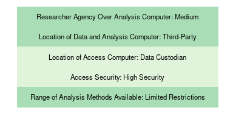
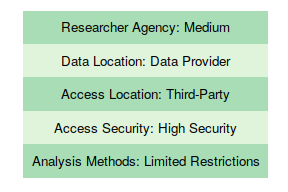
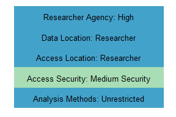
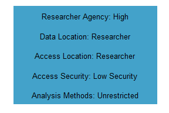
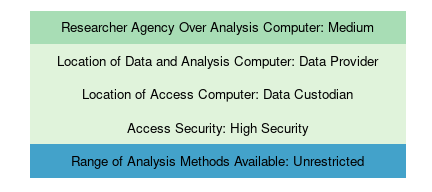
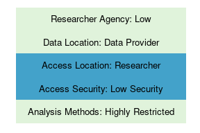

2 Physically Protecting Sensitive Data
Jim Shen (J-PAL)Lars Vilhuber (Cornell University)
2.1 Introduction
Within the Five Safes framework, safe settings rely heavily on the physical environments in which data are stored, processed, transmitted, and accessed, and from which researchers can access computers that store and process the data. However, it is also the setting that is most dependent on rapidly evolving technology. In the 1980s, it was common and considered secure enough to send around floppy disks, which researchers then inserted into stand-alone desktop computers in a locked room. Forty years later, network technologies allow for superior security combined with greater ease of access.
Possibly because technological advances happen faster than legal frameworks change, data custodians and policymakers may not be aware of the most current technological possibilities when crafting the legal and contractual framework for data access. This chapter will attempt to capture a snapshot of the technologies available and in use as of 2020, as well as characterize the technologies along a multi-dimensional scale, allowing for some comparability across methods. This is followed by several examples, both from the case studies in this handbook as well as others that are of particular relevance.
As a caution, by the time that this chapter is being read, the range of possibilities may yet again have expanded (rarely does it contract). The difficulty of implementing any given data access mechanism is contingent on the local conditions, skills, and available resources. Due to the many possible factors that go into a technological choice, it is not feasible to make a comprehensive set of recommendations for data providers and researchers. However, this chapter can provide recommendations for a minimum baseline of security features that data access mechanisms should include and a framework for evaluating the tradeoffs between addressing likely threats while maintaining useful access and minimizing costs.
Readers must note that physical security is only one component of protecting individuals in data and safely using data for research and cannot be considered on its own. The various technical measures described in this chapter are always implemented within the context of an overall access mechanism and cannot be evaluated or ranked independently. Each case study in this handbook is an example of a global approach to implementing data access mechanisms, of which the technology used is one component.
For illustrative purposes, this chapter utilizes a simplified structure in which data providers, researchers, and possibly third parties are the actors involved in the process of storing and hosting data and computers. The introductory chapter and the chapter on data use agreements (DUA) provide a more refined view of the various roles.
2.2 Types of Security Threats
There are a variety of security threats, each with different levels of likelihood, severity, and considerations, that are unique to the specific context of every data sharing agreement and access mechanism.3 Depending on the context, actions taken to address any given threat may be required, for practical or legal reasons, regardless of the burden on researchers or the cost of implementing the solutions. Data providers and researchers looking to establish new data access mechanisms should carefully judge the likely threats, including their severity and the cost-effective ways of addressing them.
The archetypical threat to any computer system is the active, unauthorized access by adversarial actors (commonly referred to as hackers). There are two main mechanisms in which this occurs. Adversarial actors can exploit technical vulnerabilities in the data access mechanism, such as improperly secured computer systems and networks. Threat actors can also utilize social engineering, which is the use of deception to manipulate individuals to reveal credentials to unauthorized users.4 There are many possible incentives for adversarial actors to compromise data: exploiting specific data (targeted attacks), inflicting financial or reputational harm (targeting organizations), seeking financial or reputational gain (attacks of opportunity), or attacking for its own sake (functionally random targeting). One cannot assume that any particular set of data is not of interest for adversarial actors merely due to the contents of the data or the organization that holds the data; many types of stolen electronic data have direct monetary value, and the attack itself can be the objective when adversaries are motivated by ideological reasons (Ablon 2018).
A related security threat is an unintentional breach where data are left unsecured by authorized users. In this scenario, the data are breached not by any deliberate attempt by adversarial actors to gain access but by behavior of authorized users that leaves data exposed, such as the loss of a device that contains or can access data. These breaches can still lead to adversarial actors acquiring confidential data. Collectively, deliberate attacks by adversarial actors and unintentional breaches can both be categorized as unauthorized access.
The third main category of security threats is internal: authorized users become bad actors and use the data in unauthorized ways. Unlike the other two threats, this is a situation where the threat comes from within the framework of the data access mechanism. This is an inherent risk of granting data access to outside users. Users may wish to conduct analyses that are unauthorized by the data provider, exploit the data for personal gain unrelated to the analytical use of the data, or suffer lapses in judgement regarding the protection of the data. This kind of threat is in part addressed through non-technical means, in particular the choice of safe people and contractual and legal sanctions. However, restrictive data access mechanisms serve to address this threat as well.
2.3 Technical Features of Data Access Mechanisms
There are a variety of technical tools that can be used to protect against these security threats and are important for the implementation of secure data access mechanisms. This section provides a non-exhaustive introduction to a list of important tools, systems, and concepts. These tools broadly correspond to protecting three components of data access mechanisms: the transfer and storage of data, the researcher’s access to the data, and the secure locations for data access. The chapter then proceeds to describe commonly used data access setups, the protections they provide, and their advantages and disadvantages.
2.3.1 The Basics
All computer systems should follow the basic computer security mechanisms. While this may be standard practice for any centrally managed computers, many researchers at universities, corporations, and government agencies may be self-managing their laptops. At a minimum, all computers should use a firewall and antivirus software, be encrypted with secure passwords, and apply basic computer hygiene, such as not using USB drives or other devices unless they are owned by the user (for example, see guidance by Microsoft and Apple). When using storage servers, operating systems need to be kept up-to-date with security patches. Data providers and researchers looking to implement new data access mechanisms, or to review existing ones, should consult with their institutions’ IT and security staff.
2.3.2 Storage of Data
2.3.2.1 Physical Media
Physical media is any device used to store data: hard drives, solid-state drives, and removable media. Removable media include devices such as USB drives, DVDs, and external hard drives. Removable media are typically used in the transfer of data between parties, such as from a data provider to a researcher. They are often disallowed on secure access or analysis systems. On-site storage may be in the form of directly attached physical media or network drives.
2.3.2.2 Cloud Service
The use of cloud storage services8 can provide storage solutions that also serve as transfer mechanisms. Mechanisms similar to cloud storage can be implemented by data providers or intermediaries by using open-source software such as Nextcloud and is becoming more common, in particular in combination with cloud computing. Utilizing cloud storage services may place the data under the control of a third party, which may be prohibited depending on the data sharing agreement or relevant legal constraints. Files may be encrypted on cloud storage services.
2.3.2.3 Reliability as a Criterion
Reliability of storage refers both to preventing data loss as well as maintaining system uptime. The risk of data loss can be mitigated by using one or more of the following techniques. Multiple disks can be organized in a redundant array (RAID) such that the failure of any one (or sometimes multiple) disk(s) does not result in the loss of data. Robust automated backup strategies tailored to the risk tolerance as well as any legal or DUA requirements can be used. Backup strategies involving manual action (plugging in a USB drive in combination with scheduled backup software) are fallible but may be considered as a last resort.
When using servers to store data, maximizing system uptime is important to allow for the uninterrupted use of data for research. Specialized storage servers allow for maintenance, including hot-swapping the hard drives, while the server remains available for use. Similarly, having a USB drive with a current backup available mitigates the downtime should data be lost.
Online storage services implement all of these techniques as a normal part of their businesses and may be one way for researchers utilize reliable data storage if compliant with DUAs. Furthermore, the ability to retrieve a backup copy or a previously versioned copy need not be implemented at every point. For instance, it may be sufficient for the data provider to implement backups for key data files. In case of data loss, the researcher can simply request a new copy of the file. However, researchers will still need to be able to back up their own code and derivative files.
2.3.3 Encryption
Encryption is a cornerstone of information security. Fundamentally, encryption is a process of encoding information using a process that prevents other parties from reading it unless they have the encryption key. Data can be encrypted at rest (when not being used or while stored on hard drives or USB drives) and in transit (while being transferred over a network or on physical media such as DVDs or USB drives).
Even though using encryption may decrease convenience (a password or a hardware key needs to be used each time decryption occurs), utilizing encryption for data and devices should be mandated as a minimum-security feature as part of any data access mechanism. In almost all cases, there is no added monetary expense for encrypting existing data and devices; in return there is a substantial increase in protection against unauthorized access. IT staff, where available, should be well versed in these techniques. Individual researchers, if receiving data, should consult with IT staff on how to implement an appropriate strategy. While utilizing encryption is a basic computer security best practice, it is of particular relevance for data access mechanisms due to the many methods of using encryption for storing and transferring data.
Security in the context of data storage is the prevention of unauthorized data access should an adversary gain access to the storage device. On top of data access controls for users, the storage mechanism itself needs to be properly configured. Keeping the data fully encrypted when not in use, known as encryption at rest, provides protection in the event that an adversary gets access to the storage device. When an entire hard drive is encrypted and needs to be unlocked before being used it is called full-disk encryption (FDE), and it can be implemented with both hardware or software methods.9
FDE occurs once when systems (servers, laptops) are booted up and can be combined with biometric authentication. Data encryption may require that a hardware token be present any time data are processed, but such a hardware token may be embedded in the computer or attached as a USB device.10 File-level encryption can also be employed when using online storage systems. Operating system–level FDE is built into all major operating systems: FileVault on MacOS, BitLocker on modern Microsoft Windows operating systems, and various systems on Linux OS.11 If not using FDE, users can encrypt individual data files (file-level encryption) or virtual disks, both of which would only be decrypted when in use. Popular software for file-level encryption, such as GnuPG, are free and easy to use and available for all major operating systems. For virtual encrypted disks, VeraCrypt can be used.
In settings where cloud services are allowed, it is worthwhile to investigate the encryption practices of the cloud vendor. Many cloud vendors offer enterprise services that can meet higher standards of security suitable for meeting regulatory or legal requirements or can prevent the service provider from decrypting the data. However, while the cloud service may encrypt any data stored on its servers, the cloud storage service may be able (or even legally obligated) to decrypt the data. A work-around is to use additional file-level encryption before making the data available on the cloud service, and this may be mandated by the data sharing agreements.
2.3.4 Transfer of Data
Unless researchers access data at the data providers’ computers and premises, data needs to be transferred.
2.3.4.1 Transfer by Physical Media
Physical media intended for data transfers such as USB drives and DVDs should always be encrypted. USB keys can be purchased with hardware-based encryption. When using physical media, the decryption keys (passwords) should always be transmitted separately; this prevents an unauthorized user who manages to obtain either the decryption key or the physical media from accessing the protected data.
2.3.4.2 Secure Network Protocols
For data access mechanisms that rely on electronic transfers between the data custodian and researcher, using an encrypted transfer protocol is a minimum-security practice that should be followed at all times. Some obsolete but commonly used transfer protocols do not use encryption and are therefore vulnerable to data being read in transfer. Any transfer protocols should be encrypted in transit. There are many network protocols used for transferring data or establishing secure connections between computers. Data may be transferred peer-to-peer or may require the use of an intermediary party that sometimes is not a signatory to the DUA. Secure peer-to-peer transfer can use the SSH File Transfer Protocol (SFTP) or authenticated transfer via HTTPS (the same protocol used by banks and most modern websites, which encrypts the data sent between the client and the server). Transfer over virtual private networks is also encrypted, regardless of transfer protocols, including for shared directory mounts (Windows shares, NFS). In settings where cloud services are allowed, data transfers are always encrypted. Encrypted cloud services can fulfill the requirement for a minimally secure electronic transfer protocol.
Note that while the transfer may be encrypted, both intermediate as well as final endpoints should use encrypted storage. As with cloud services, it may be useful to use file-level encryption to ensure that any intermediate storage locations do not compromise the security of the transfer mechanism.
2.3.5 Data Access Controls
Data access controls are of particular relevance for systems where multiple researchers utilize the same computing resources for access to or analysis of data. Access control regulates what users can view or use in a computing environment, preventing unauthorized users from accessing confidential data. Access controls can be implemented by setting user permissions on directories at the operating system level on a computer. Another method is to use a virtual machine, which is a completely isolated computing environment running on a host computer. A host computer can run multiple virtual machines, with each researcher or research project having a specific virtual machine. Each virtual machine is configured to provide access only to a specific (limited) set of data files as defined by the access permissions of the research team. In addition, software availability or network access can be customized on a per-project basis. Containers, popularly known as Docker, or Linux techniques such as chroot, achieve similar goals with varying degrees of isolation and performance penalties.
2.3.6 Virtual Private Networks
When using virtual private networks (VPNs), an encrypted channel is established between two computers over public networks. Once set up, the connection is as secure as though the computers were connected on the same local, private network. The VPN ensures that a minimum-security level is achieved by all other network connections, such as shared network drives or remote desktop access, as these all occur within the same encrypted channel. This is useful for data access mechanisms that allow researchers to access data from many possible locations as well as for data transfers. As typically implemented, users must authenticate themselves with usernames, passwords, and often a secure token (2FA) to access the VPN. Many universities have VPN services that allow researchers to access university networks from a remote location. There are VPN configuration settings built into the Windows Server operating system as well as open source options. These can be useful in instances where a data sharing partnership has to implement a VPN from scratch, such as establishing a VPN service at a data provider location that is sharing data for the first time
2.3.7 IP Address Restrictions
When any network is involved, network access controls may be implemented. One way to ensure that only an authorized system has access to a remote system is to restrict the IP address of the devices that are allowed to connect to the server. This can be useful for performing data transfers as well as for remote access to data. There are two types of restrictions: blacklisting and whitelisting. Blacklisting blocks known or potential bad actors but otherwise does not restrict connections to the server; whitelisting only allows authorized users access to the server and is the primary use of IP restrictions in an access control mechanism. This is frequently an option built into the software for managing the server. For example, software used for managing SFTP can restrict the IP addresses that it will accept connections from. For data providers and researchers, this can be restricted to specific devices that the researcher registers with the data provider as the access computer. Other more sophisticated network access controls may also be implemented as dictated by any one of the involved parties’ IT security staff. Restricting the IP address to specific devices can help protect against both unauthorized users, who would need to gain access to an authorized device, as well as allow for the monitoring of the whitelisted devices to guard against misuse of the data.
2.3.8 Remote Desktop
Remote desktop software (also referred to as virtual desktop infrastructure, VDI) enables users to connect to another computer’s desktop over a network. This can be used in data access mechanisms when the researcher does not have direct access to the data and performs the analysis remotely on a separate computer. Data custodians must configure the analysis computer to allow for incoming remote desktop connections, and the access provider must supply the appropriate software and network infrastructure to support the remote desktop connections from the access computer. Password and other authentication requirements help protect against access by unauthorized users. Analysis computers (typically servers) configured for remote desktop access typically run Microsoft or Linux operating systems; access to the remote desktop exist on a variety of platforms, including cell phones and Apple computers. Vendors of such systems include Microsoft, Citrix, VMware, and NoMachine. Remote desktop connections are often channeled through a VPN for additional security.
The use of remote desktop software allows a researcher to use an analysis computer remotely with the desktop environment of the analysis computer displayed on the client device (the access computer). The data custodian retains full physical control over the analysis computer. This can help prevent the misuse of data by authorized users. The use of remote desktop software can be valuable in instances where the data custodian has decided to not allow researchers to hold the data, in research data centers accessing data stored elsewhere, or when an access provider is supporting researchers across a wide geographical area, such as supporting international research on data that cannot leave the country of origin. The access computers do not need to be capable of running statistical software or intensive analysis; the analysis will occur on the server that hosts the data and software packages. At the same time, the analysis computer (hosted by the data provider) must be capable of supporting multiple, simultaneous researchers running analysis software. Remote desktops are reliant on active internet connections. While remote desktops are robust to network disconnects (users can simply reconnect to the running session and continue where they left off), the user experience degrades when network connections are unstable or slow.
2.3.9 Thin Clients
Thin clients are a special case of an access computer running remote desktop client software. The primary benefit of thin clients is the extension of hardware control to the researcher’s desktop by the data provider. Very secure implementations of thin clients can prohibit any usage beyond displaying information from the server and accepting mouse and keyboard input from the user. Thin clients typically operate without local storage, preventing users from saving data to the client. Thin clients can be secured against unauthorized access with various login and authentication requirements that may be more stringent than the controls on researcher’s own system. Thin clients may be housed within a specific access location or provided directly to the researcher.
Generally, researchers would not procure their own thin clients, as they have no utility outside of facilitating remote access. Rather, they are typically provisioned by data custodians or access providers. The management and infrastructure needed to support thin clients may require expenses over and above the cost of providing remote desktop services.
However, one of the main advantages of dedicated hardware thin clients is that they are cheaper and simpler than regular computers. As of the time of writing, thin clients can cost as little as US$100 for the hardware itself, in contrast with the cheapest entry level computers, which are several hundred dollars. Thin clients can be sourced from many manufacturers of enterprise hardware both as standalone devices for the user to configure as well as full-fledged hardware and software package solutions configured by the vendor (the latter costs more than solely procuring the hardware). Thin clients can be purchased from most business PC vendors, including Dell and HP, as well as some custom-produced solutions, such as the SD-Box developed by, and produced for, the Centre d’accès sécurisé aux données (CASD).
2.3.10 Biometric Authentication
Biometrics are physical, biological, and sometimes behavioral features unique to individuals. Biometric authentication is the use of biometric features to verify the identity of individual users based on stored information about authorized users. One of the most common biometric technologies in current use is fingerprint scanners for consumer electronics such as laptops and smartphones. Other commonly used technologies include facial recognition, retinal or iris recognition, and voice identification. Biometrics can be used to control access to secured locations as well as to secure individual devices, helping to prevent unauthorized access. The main components of such an access system include the biometric sensor itself, which is connected to a database that contains the set of validated users, and either the physical or electronic lockouts for a given system (e.g., entering a room or logging into a computer), which are controlled by the biometric sensor.
Biometric authentication techniques can serve both as a primary form of identification as well as a layered two or multiple factor authentication techniques, such as in conjunction with passwords or other devices. While some devices come with built-in biometric authentication, such as the aforementioned fingerprint scanners, implementing additional biometric authentication requires significant resources. In particular, the initial enrollment of users’ biometrics typically requires the physical presence of the individuals.
2.3.11 Physical Access Cards
Physical access cards are electronic cards that identify the card bearer for a physical access control system. An access mechanism for devices or rooms secured by a card reader validates the user’s card against a database that has a set of valid cards and subsequently opens the locks on the system or room. The cards can be outfitted with magnetic stripes, barcodes, chips, or other systems for interfacing with the card reader. Physical access cards are commonly used by organizations, including universities and government agencies, and can have the advantage of using existing infrastructure to support the creation of secure access rooms for researchers receiving administrative data. Unlike with biometric authentication, access cards can be easily lost or given to others and have a greater potential for misuse. Older systems may also be vulnerable to cloning attacks in which the magnetic stripe is copied to an unauthorized card. Protecting the access cards themselves is primarily a policy and training issue.
2.3.12 Secure Rooms
Rooms that house computing systems (both for storage and for access) can be secured against unauthorized access. Rooms can be constructed in ways that prevent unauthorized access and can be outfitted to monitor usage and users. Secure rooms may be required to have fully enclosed walls that extend from floor to ceiling, have a small number of possible entryways, and have doors, windows, air vents, and other possible entryways secured by bars, mesh, or other methods. Doors and walls may need to satisfy minimum specifications in terms of materials, construction techniques, and thickness to increase protection against physical attacks. For instance, reinforced doors and walls offer increased protection compared to regular home and office construction materials. Door hinges, access panels, partitions, windows, and other possible ways of entering the room can be installed from the inside of the secure room to prevent their removal from the outside. Additional requirements may extend to physically securing devices within the room. Computers may be required to have no outside network connections (air-gapped network) or no network connection at all. These restrictions are typically only utilized when mandated by data providers or required by law for the sharing of data. Building secure rooms is a costly endeavor, as few offices will meet these specifications without additional construction and hardening. Not all university campuses will have secure rooms, and when they do, there will often only be one secure room. Thus, access to secure rooms typically entails both long-distance and local travel, reducing overall accessibility.
2.4 Typical Access Mechanisms
The above technological methods can be combined in various ways, yielding an access mechanism. The case studies in this handbook each implement one or more of these access mechanisms. This section provides four archetypal examples of data access mechanisms. These are broad categorizations of how data access mechanisms can be set up and are not exhaustive of all possibilities.
2.4.1 Remote Execution
Under a remote execution model, a researcher submits a request to have the analysis executed on the confidential data by the data custodian.12 The researcher does not directly access the data and can only view output shared by the entity executing the analysis code. Data custodians maintain full control over the data and have the opportunity to check the researchers’ code prior to execution as well as the output produced by the code prior to transferring to the researcher.
Remote execution requires that the data custodian maintains a mechanism for executing researchers’ code, either through an automated service or technical staff manually executing the analysis. The remote execution systems may also conduct disclosure avoidance checks on the output before sending it back to the researchers. These checks may also be conducted in automated fashions or manually. In some cases, data providers prepare test files: data files that have the same variables and table structures as the real data but contain fictitious values.
The data custodian creates and maintains the systems to facilitate the transfer of the necessary files through customized web portals or code upload facilities. While the input code and the output results by definition are non-sensitive files, electronic data transfer mechanisms or secure network protocols may still be useful tools. In some instances, cost is recovered by charging researchers.
Remote execution gives strong protection against adversarial actors via the data access mechanism (breaches of a data provider occurring outside of the data access mechanism can still occur), though query attacks, in which attackers create overlapping queries or tabulations that reveal sensitive data, may still be possible (Asghar and Kaafar 2019). Researchers have no opportunity to accidentally disclose research data. Data providers have strong protection against misuse of the data, as they have the opportunity to vet every analysis code prior to executing it or transferring the results back to the researcher. The tradeoff for the data provider is the cost of providing the necessary resources (systems and staff time) to conduct the analysis.
Remote execution systems may integrate throttles and delays to prevent resource abuse or query attacks. For instance, the number and runtime of analysis jobs for users may be severely limited or carry an hourly cost. Researchers need to specify the analysis carefully, and iterative or exploratory analysis may be inhibited or reduced. For some researchers, this may be perceived as an impediment; however, for researchers working under a preregistration paradigm, the same restriction may be neutral or even perceived as an advantage.
2.4.2 Physical Data Enclave
In a physical data enclave model, researchers must enter an access-controlled location (the data enclave) to analyze the data. The data provider can act as its own data custodian or appoint a trusted third party to run the enclave on the data provider’s behalf; enclaves under the control of the researcher are described under Researcher-Provided Infrastructure. The data custodian can choose to use on-site storage and computing at the data enclave or on a remote server that can only be accessed by thin clients located within the data enclave; in this case the connection to the remote server typically uses secure network protocols, virtual private networks, or an encrypted direct connection. The data custodian typically has staff or automated systems to ensure that only authorized researchers enter the location, which may be secured with biometric authentication or physical access cards. Sometimes, the access rooms themselves satisfy specific security requirements (secure rooms). Output vetting may ensure that only safe outputs are removed from enclaves.
The data custodian has most of the security benefits of remote execution by maintaining full control over the data in the entire research process. Because the data remains under the control of the data custodian and secure rooms restrict physical access to approved users, the data custodian is secured against unauthorized access. Physical data enclaves remove the potential bottleneck and additional expense of requiring dedicated staff on the part of the data provider to actually run the analysis on behalf of the researcher.
However, physical data enclaves still impose restrictions on the flexibility of researchers. Instead of waiting for someone to run the remote execution for them, researchers must schedule visits and travel to a physical location. Capacity limits may restrict the number of users that can access the data at the same time. In more basic implementations, a physical data enclave can be as simple as a locked room that only authorized users can enter. Meeting more stringent security requirements can impose a substantial initial start-up cost on new sites. This cost is often borne by the researchers’ institution, and is too large for individual researchers to incur.
2.4.3 Virtual Data Enclave
A virtual data enclave is conceptually similar to a physical data enclave. Data custodians still maintain servers that house the data. However, the requirement to access the data from a secure room is relaxed. Researchers have many choices for access, sometimes unrestricted, and may be able to utilize their normal office or home to access the data via remote access. There are two basic approaches to the remote access mechanism: either using remote desktop software that the researcher can install on their own computer or dedicated thin clients rented from, or provided by, the data custodian. As with physical enclaves, the data custodian typically also requires the use of secure network protocols or virtual private networks to access the data.
Virtual data enclaves retain most of the security benefits of physical data enclaves, except for physical control of the environment from which researchers access the data. In particular, as with physical data enclaves, data or output cannot be removed from the secure environment. While virtual enclaves remain robust against unauthorized release of the data by keeping data stored in a secured environment and requiring authenticated access, it is possible for unauthorized individuals to view and potentially interact with the restricted access environment. For instance, unauthorized users could illicitly view the screen of an authorized user using the access system (known as shoulder surfing), or authorized users could share credentials with unauthorized users. Note that legal and contractual requirements may make such behavior explicitly illegal.
The virtual data enclave model does not require researchers to travel to specific facilities to perform their research, though some restrictions may still apply (IP addresses, university offices). While there may still be incentives to share costs for thin clients, most virtual data enclaves are affordable for individual researchers.
2.4.4 Researcher-Provided Infrastructure
In some data sharing arrangements, the researcher provides the on-site storage and analysis infrastructure. The data provider will transmit the data to the researcher through a secure transfer mechanism (physical media, over secure network protocols, or a cloud service). Providers typically require that data be encrypted at various stages of processing.
When the analysis environment is under the physical control of the researcher, the data provider has a significantly reduced ability to monitor usage of the data. More so here than in other models, the data provider depends on the contractual agreement with the researcher for preventing the misuse of the data, typically through a DUA specifying safe settings and the nature of safe outputs.
This process allows researchers more flexibility and rapid turnarounds on research findings. The overall cost is typically much lower, as the data provider only has to provide the data and the staff necessary to transfer data to the researchers. Separate staff or systems are not needed to control exit or entry of people and to monitor analysis outputs, since this is delegated to the researcher. Data providers may choose to conduct on-site inspections to verify adherence to contractual agreements of the safe setting, verify at-rest encryption protocols, or require attestation of post-project destruction of data. Some providers require that researchers submit their output for approval, which requires staff time.
2.5 Five Aspects of Data Access Mechanisms
Actual implementations of data access mechanisms have many degrees of freedom in combining the technical components outlined at the start of this chapter. The four typical access mechanisms combine these technical components in specific ways. Each of the case studies in this handbook is a variation of the four typical access mechanisms. In order to summarize the salient features of data access mechanisms, each of the data access mechanisms are categorized in five aspects:
- The level of researcher agency over analysis computers refers to any technical restrictions on usage of the analysis computers.
- The location of analysis computers and data refers to the physical location of researcher-accessible computers used to analyze the data; for simplicity, this context assumes that the analysis computers are at the same location as the data.
- The location of access computers refers to the physical location of the computers (endpoints) that researchers use to access the data, which may be the same or separate from the analysis computers.
- The level of access security refers to the overall physical security arrangements for the environment and access computers from which researchers can access the data.
- The range of analysis methods available to researchers refers to any restrictions on the types of statistical analysis that researchers can perform on the data.
For each aspect, a data access mechanism is classified into three categories. These are weakly aligned with how restrictive it may be on the researcher, or conversely, how much control the data provider exerts; these range from high to low, but the mapping is not always exact. However, in all cases, there are distinct variants, which are described in the sections below. For convenience, a simple visualization has been defined that maps the level of restrictions to colors (with the most restrictive category of each aspect being the lightest while the least restrictive is the darkest), allowing a visual comparison of multiple access mechanisms.
Note that “control” is deliberately not framed as guaranteeing greater security. The level of security of any data access mechanism is dependent on a large number of factors of which the technological features are merely one component. Proper implementation and maintenance of the technical infrastructure, compliance with restrictions outlined in the DUA, the training of users and staff, and other factors all contribute to the actual security of a data access mechanism.
When proposing and negotiating a potential DUA, evaluating the physical security arrangements along the five aspects outlined can help researchers and their data providers craft robust mechanisms to protect data when transferring and using data for research.
Each of the five aspects of data access mechanisms have specific interactions with physical security. Such interactions are highlighted further in the descriptions of the five aspects and examples provided. In all cases, relaxing restrictions increases risk with respect to physical security (safe settings) but can be mitigated by measures in the other safes of the Five Safes framework discussed in this chapter, allowing data providers to maintain an acceptable risk-cost-usability trade-off. The five aspects are not fully independent but neither are they tightly aligned. Thus, it is possible to combine low restrictions on the location of analysis computers with any level of agency over their configuration or have highly restricted access environments combined with a wide range of restrictions on analysis methods.
2.5.1 Researcher Agency Over Analysis Computers
One of the key controls leveraged by data providers is the level of agency that researchers have over the analysis computer. This is typically implemented through restrictions on operating system configuration and software installation; the effect on researchers is the potential restrictions on the software that they can utilize.
Data providers may choose to grant researchers only low or medium agency over analysis computers in order to increase computer and network security and as a mechanism for disclosure control. By restricting what users can do, such controls can help harden the analysis computers against direct threats from adversarial actors or researchers unwittingly installing malware on the analysis computers.
In a low agency setting, researchers will be limited to the software that the data provider chooses to allow and will not have administrative privileges over the analysis computer.13
A medium agency setting may allow researchers some choice of software or limited system configuration. For instance, researchers may be able to install or request the installation of supplemental packages for pre-approved software (R, Stata) but may not be able to change system parameters such as which network to use. Typically, data providers (or data intermediaries) have direct administrative control of such computers.
In the high researcher agency settings, researchers have few restrictions on how the analysis computer can be configured. They may have administrative privileges to the analysis computer and few, if any, restrictions on the software that can be installed. The researcher may own and physically control the analysis computer or may be granted administrative privileges to a computer that is owned by the data provider or third party. Data providers may still mandate technical solutions such as the use of monitoring, operating system patch management software, or anti-virus software.
| Low Agency | Example: In the Statistics Canada Real Time Remote Access (RTRA) system, researchers can only use SAS and cannot directly view the data with no exceptions allowed. |
| Medium Agency | Example: The Federal Statistical Research Data Centers (FSRDC) network has a specific set of software on their secure computing network that is made available to researchers. Additional software can be requested, which must be approved by program managers and security analysts. |
| High Agency | Example: In the National Center for Education Statistics (NCES) restricted-use data license, the researcher must set up a secure data room in accordance with NCES requirements. However, researchers provide and retain full administrative control over the analysis computer and can utilize any software. |
The advantage of low researcher agency is the reduced likelihood of inadvertent or intentional unauthorized use of data. The cost of low or medium agency is varied. Restrictions on software may increase training expenditures for researchers. Restrictions on physical attributes of the analysis computers may increase the expense of providing more storage or limit computationally intensive analyses, slowing down research. A low researcher agency agreement shifts most of the burden of maintaining the analysis computer onto the data provider. Thus the increased security of low agency is gained through slower research and higher costs for the data provider.
2.5.2 Location of Analysis Computers and Data
The location of the researcher-accessible data and the analysis computer defines who is considered the data custodian within a data access mechanism. Note that this is distinct from agency over the analysis computer: the analysis computer may be physically located with researchers, but the researcher may have low agency over that computer. The selected examples also abstract from situations where data storage and computing capabilities are in separate locations, as these situations are rare.14 The party that houses the analysis computers and data has physical control. As such, they will need to provide the physical infrastructure and technical staff to store the data and facilitate access.
The default situation is for the data provider to have custody of the analysis computer and data, acting as the data custodian. This may occur when there are specific legal or policy requirements for the data’s location and security or if the data provider is best positioned to act as such in terms of technical capabilities. Data providers who have existing infrastructure that they can repurpose or have access mechanisms established as part of their existing work may find this option to be particularly attractive. Furthermore, by acting as their own data custodian, transferring data is not a task that the data provider needs to consider.
Data providers can choose a third-party data custodian. In general, third-party data custodians (also called data intermediaries) interact with multiple researchers and may interact with multiple data providers. Third parties may have better or specific technical expertise, lower cost structures for the same level of security, and may leverage economies of scale in security and access mechanisms. Third parties can be government statistical agencies, acting on behalf of provincial or administrative government agencies, data centers at universities, or commercial entities. They may also have expertise in combining data from multiple sources while protecting the privacy of each source. For instance, government departments responsible for immigration and taxes may not be legally allowed to share data with each other, but they may each be able to transfer the data to a trusted third party. University-based third parties tend to be more familiar with the requirements and use cases of researchers, enabling these third parties to be more responsive to the needs of researchers: an area of expertise that can be of interest to data providers. For instance, university-based third parties may have expertise in survey management and data archiving or in high-performance computing. Entities without their own research agendas may be particularly appealing as third parties, as that removes one of the incentives for the misuse of the data by an external data custodian.
In some cases, the distinction between these two categories becomes blurred. A data provider with substantial expertise in making their own data accessible may offer this expertise to others, thus acting as third-party data custodian.15
Finally, individual researchers can act as the data custodian. This is still quite frequently used, in particular when no previous data access existed. For the researcher, acting as the data custodian enables more flexibility for accessing the data without traveling or remote access systems. Most of the cost of maintaining IT infrastructure and security fall onto the researcher, subject to other conditions in the overall data access plan; in addition, researchers assume the risk and liability associated with housing data. Security provisions include keeping analysis computers offline with no external network connections or other provisions. The enforcement of the DUA becomes a key mechanism for preventing the misuse of the data. Researcher agency over the analysis computer may also be limited, despite the researcher having physical control of the analysis computer. For instance, some data providers (often commercial companies) provide researchers with fully encrypted and remotely managed laptops. While the laptop and data are located with the researcher, the researcher has only low agency over the analysis computer.
| Data Provider | Example: The Institute for Employment Research (RDC-IAB) (on-site access) house all highly confidential RDC-IAB data on their own servers, which are accessed remotely by researchers from various locations. |
| Third Party | Example: The Private Capital Research Institute (PCRI) serves as a trusted third party for its data providers (private capital firms) and in turn contracts with a third party (National Opinion Research Center, NORC) to maintain the analysis computers and data access mechanism. |
| Researcher | Example: The Aurora Health Care and MIT data exchange has the data and analysis computer located with the researcher. Researchers must store the data in accordance with security requirements outlined in their DUA. |
In all cases where the data provider relinquishes the data custodial role, data are transferred. While secure data transfer mechanisms exist, this is an additional risk within the overall framework; as described earlier, the cost is typically low to null.
For data providers, transferring control of the data and analysis computers to a third party or directly to researchers might be desirable when support for many researchers is a burden for the regular business of the data provider. By transferring the data to another party, a data provider may no longer be responsible for the cost of providing computational infrastructure for data storage and analysis. However, the data provider may see some additional costs for enforcing access restrictions, such as needing to conduct site visits once physical custody of the data has been transferred. Data providers will rely on the enforcement of DUAs when giving others custody of data.
2.5.2.1 Location of Access Computers
In many cases, the analysis computer may not be physically accessible to the researcher. This section therefore distinguishes access computers and restrictions that might be imposed on them as to their location and type. As a special case, the access computer can be coincidental with the analysis computer. Access computers can be located with the non-researcher data custodian, a third-party access provider, or the researcher. The location of the access computer is not necessarily aligned with the ownership of the access computer. For instance, a researcher may be assigned a computer that serves as an access computer but which is owned by the data provider. The security of the access computers is discussed in the next aspect, which is distinct from the locational aspect.
If the access computer is located with the non-researcher data custodian, which can be the data provider or a third-party custodian, the researcher must travel to that location.
Data providers can choose a third-party access provider. Note that the third-party access provider need not be a data custodian. Researchers may still have to travel to a separate location. The key role played by third-party access providers is control over physical access to the access computers. In some cases, third-party access providers may also have the technical capability to maintain sophisticated network connections that are beyond the scope of individual researchers, such as VPN setups with dedicated encrypted endpoints. In other cases, it may simply be a way for multiple researchers to share the cost of using a mandated technical solution.16
Finally, access computers can be located with the researcher. Trivially, locating the analysis computer with the researcher makes the access computer co-incidental. However, there are numerous cases where the access computer is with the researcher while the analysis computer is not. Examples include any web-based access, most remote execution systems, and many remote desktop systems: researchers use their own computers to access the portal while all computation occurs elsewhere. In almost all cases, locating access computers with researchers allows them to work from a location of their choice, though in some cases this may be restricted to a designated university office.
| Data Custodian | Example: The New Brunswick Institute for Research, Data and Training (NB-IRDT) is an example of locating access computers with the data custodian. Researchers wishing to use data held by NB-IRDT must travel to one of the NB-IRDT campuses to utilize the access computers. The access computers, in turn, connect over secure networks to the central analysis computers. |
| Third Party | Example: The SafePod Network (SPN) in the United Kingdom is an example of locating access computers with a third-party access provider. Each individual SafePod, located at academic institutions, houses an access computer that provides remote access to the UK Administrative Data Research Network (University of Bristol n.d.). |
| Researcher | Example: The RDC-IAB Job Submission Application (JoSuA) system is a web interface that researchers can use from their own computers to submit analysis files to the IAB-RDC for execution on IAB systems. |
In general, the closer access computers are located to the data provider, the higher the security arrangements that apply. However, the two aspects are not perfectly correlated. In particular, access computers located with researchers can have very different security arrangements.
2.5.2.2 Security of Access Computers
In addition to the location of access computers, the security of access to those computers can vary substantially. This aspect encompasses both the location where the access computer resides and the type of access computer. Security of access is categorized in three levels: high, medium, and low security. Data providers and researchers looking to establish new data access mechanisms should weigh the additional resource costs and barriers to research incurred by increasing access location security with the additional protections that higher security access locations provide.
In instances where a party other than the data provider maintains the access location, data providers typically have the right to approve the security arrangements, conduct audits, or otherwise directly verify that the operator is in compliance with the mandated security requirements.
A high security access location has strong specifications for physical security, requiring the use of a secure room, typically requiring additional hardening of the room beyond just access controls, physical monitoring by video or access location staff, in addition to any electronic monitoring on the access computer itself. The additional protections and monitoring guard against unauthorized access as well as the removal of unauthorized outputs from the access location.
If not already existent at the access location, data custodians or access providers will require expertise from IT and security specialists to assist with defining the specifications and implementation of the features of high security access rooms.
A medium security access location has a defined location with access restricted to approved researchers. These can be rooms secured with keycards, biometrics, or a simple lock and key restricted to approved staff. Such restrictions may be designed to prevent a limited set of unauthorized access attempts or to inhibit shoulder surfing Medium security access rooms may incur additional costs for the location administrator, requiring dedicated space and staff to maintain the access location itself, but may also be as simple as a designated locked room at a university research institute.
A low security access location has few or no access controls. Simple restrictions might include broad geo-restrictions (campus-only) or procedures to follow. Data providers may mandate storing the access computer in a locked room or the use of IP address restrictions. When no access restrictions are imposed, researchers are free to use access computers from any location.
In addition to the locational security described above, the type of access computer can also range from high security to low security. Highly secure access computers (which do not contain data) may still include fully encrypted operating systems, the use of VPNs, remote desktop software, secure network protocols, and encryption or requiring biometric authentication of the access computer. This can take the form of dedicated thin clients. Low security access computers are typically allowed for remote submission or web portal-type access, where any computer, in any location, is allowed.
| High Security | Example: The FSRDC network maintains a network of 29 locations (U.S. Census Bureau n.d.b). While these secure rooms are located at partner organizations (universities, research centers, Federal Reserve Banks), the rooms themselves are under the control of the US Census Bureau and none contain any data. Each secure room contains multiple thin clients. Researchers travel (across campus or to a partner organization) to use the thin clients to access analysis computers located within the secure computing center of the Census Bureau (U.S. Census Bureau n.d.b). |
| Medium Security | Example: Data distributed under the NCES restricted-use data license must be kept in a locked room with access restricted only to licensed researchers, and the security arrangements are subject to random audits by NCES. |
| Low Security | Example: The Stanford-SFUSD Partnership uses low security access locations. While the data are stored on secured servers at Stanford, researchers can access the data from anywhere as long as they take reasonable and appropriate efforts to keep the data secure from unauthorized access as specified in their DUA. |
This section combines the type of access and location into one aspect, since the ultimate convenience to researchers arises from a combination of the two security measures. For instance, a data provider might provide researchers with a dedicated secure laptop, which can only be used to remotely access the analysis computers and nothing else. While there may be no location restrictions imposed on the researcher, the researcher is unlikely to carry two laptops around, and this would be considered to be a de-facto medium security solution.
The terms of the remote access will be defined in the DUA between the researcher and the data provider. The risks of locating the access computers but not the analysis computers away from the data provider are smaller. Because access computers contain no data, even if encrypted, the risk of inadvertent disclosure (for instance, if stolen) is reduced. Remaining risks include shoulder surfing and credential sharing, which can be mitigated by using third parties to control access. There is substantial convenience for researchers from having the access computer closer to their usual place of work, increasing the speed of research. The growth of networks of research data centers, where access is shared amongst many users while data are mostly remote, is testament to the demand among researchers and the acceptability of the risk for many data providers.
2.5.3 Range of Analysis Methods Available
The final aspect of data access mechanisms is the set of analysis methods available to researchers. Analysis methods can be unrestricted, subject to limited restrictions, or under extensive restrictions. Methods range from simple tabulations to complex machine learning algorithms via standard econometric techniques.
These restrictions can be implemented for technical or security reasons but mainly serve to ensure that researchers cannot misuse the data or generate unsafe output. Note that this aspect of data access mechanisms is distinct from the agency that researchers have over the analysis computer. This aspect is closely related to the statistical protection of the data (see the chapters on disclosure avoidance methods and differential privacy), affecting safe data and safe outputs.
Restricting the analysis methods available to the researcher is primarily intended to protect the outputs of any analysis, preventing reidentification and other misuses of the data. Generally, the goal of restrictions on methods is to relax or automate output checks. Setting up such systems requires a high degree of technical sophistication and resources available to data custodians. Few off-the-shelf implementations of restricting analysis methods are available. While this may be intended as a physical restriction on safe projects, researchers and data providers looking to establish new data access mechanisms should be clear on what restrictions may be placed on analysis methods and plan the research project accordingly.
When analysis methods are unrestricted, researchers can use the full set of methods available in the software that are provided on the analysis computer, including any tabulation or regression analysis. Note that the ability to report on the results obtained via these methods might still be restricted, depending on what is considered safe output. Furthermore, the ability to access any method, for instance through add-on packages (e.g., SSC for Stata or CRAN for R) may depend on the agency the researcher has over the analysis computer.
When limited restrictions are imposed, some methods might be prevented, even if the software is available, by censoring elements of those software programs. In particular, the ability to inspect individual records may be limited.
Analysis methods may be highly restricted. Restrictions can include limiting the methods available to researchers to a whitelisted set of commands or, in more extreme examples, limit researchers to the use of tabulator software that can only provide conditional tables. Most researchers will perceive this to impose strong limitations on their ability to conduct research as usual, but such methods are sometimes used to reach a wide range of users while allowing for more relaxed conditions on the rest of the Five Safes framework.
| Highly Restricted | Example: The Statistics Canada Real Time Remote Access system only allows users to employ a set of approved SAS commands. There are further limits on the number of variables and observations that can be included in analysis. |
| Limited Restrictions | Example: An example of limited restrictions on analysis methods is the RDC-IAB on-site and JoSuA systems in which certain Stata commands are censored by the system and are unavailable to researchers but broadly allows for most econometric techniques. |
| Unrestricted | Example: OLDA is an example of unrestricted analysis methods, placing no limitations on the methods that researchers can use. OLDA relies on disclosure review, as mandated in their DUA, to ensure safe outputs. |
2.6 Specific Data Access Mechanisms Along the Five Aspects
This section evaluates several data access mechanisms along the five aspects. Some of these have already been referenced for individual aspects, but the following content provides a comprehensive picture of all aspects. These include case studies in this handbook as well as outside examples. They are chosen to provide a spectrum of access mechanisms, focusing on variability in the five aspects, not representativeness. Each example provides a “badge” summarizing the five aspects visually.
2.6.1 New Brunswick Institute for Research, Data and Training (NB-IRDT)

The NB-IRDT serves as a third-party data custodian for the Province of New Brunswick, Canada to make de-identified personnel and health data available to researchers. The data and analysis computers are located at the central NB-IRDT facility, and researchers may travel there or to satellite NB-IRDT data centers to access the data via thin clients in secure rooms from which mobile devices and outside materials are banned. Thus NB-IRDT serves as a non-researcher data custodian as well as a third-party access provider to provincial data with high security. Researchers have medium agency over the analysis computers: access to common statistical programs is provided and researchers can request other software packages. The NB-IRDT allows researchers unrestricted analysis methods, relying on manual disclosure control to ensure safe outputs.
The NB-IRDT requires over two dozen staff17 located with the data custodian, including multiple data analysts, system administrators, and other technical staff to set up and maintain the data access mechanism.
2.6.2 Institute for Employment Research (RDC-IAB)

The RDC-IAB is an entity within the German Federal Employment Agency, separate from the administrative databases. It thus acts as an internal third party for the Employment Agency. The RDC-IAB uses three different access models, each with unique implementation. Notably, more sensitive data are subject to greater protections while maintaining usability for researchers.
The most restrictive access method is RDC-IAB on-site access, which makes de-identified individual data available to researchers. The RDC-IAB maintains the data and analysis computers. Researchers have low agency over the analysis computers, being restricted to approved statistical software; other user-provided software is not allowed, and third-party packages for authorized software must be approved and installed by RDC-IAB staff. Access computers (thin clients and secure workstations) are located at the RDC-IAB headquarters and guest RDCs at various trusted institutions around the world, which then act as third-party access providers. The access locations are subject to high security with physical monitoring of researchers and room access controls.

The JoSuA remote execution system allows researchers to utilize the same microdata, though they cannot view the data directly. Researchers are limited to viewing the de-identified output from their analysis, and there are some restrictions on Stata commands. In return, controls around access computers and locations are relaxed: Researchers utilize their own computers to use the JoSuA interface, and there are no restrictions on access locations. The data and analysis computer remains located with the RDC-IAB, and researchers are subject to the same limitations on their agency over analysis computers and available analysis methods.

The RDC-IAB also makes data products (scientific use files) available for direct download by researchers using a secure download platform, which are further anonymized variants of the microdata available in the other two access methods. The researcher’s institution acts as the data custodian by hosting the data and the analysis computer, with the researcher’s institution having high agency over the analysis computer. The access computers and access location are also at the researcher’s institution. The RDC-IAB DUA for downloading the scientific use files requires a medium security access location: The building and room are required to have some level of access control or monitoring against unauthorized access; options range from receptionists and security guards to admission with simple key locks. Also note that scientific use data can only be accessed by European research institutions.
The RDC-IAB has a staff of over two dozen people18, not counting staff at guest RDCs. Each data center requires at least one staff member, as well as additional staff to maintain the data products and approve projects.
2.6.3 Ohio Longitudinal Data Archive (OLDA)

OLDA is a third-party data custodian that provides de-identified, individual-level data to researchers on behalf of the state of Ohio. The data are initially located at OLDA before ultimately being transferred to researchers’ analysis computers via an SFTP server. The researchers have full agency over the analysis computer, which also serves as the access computer. The computer must be physically located in the researcher’s university office, and the IP address must be registered with OLDA. There are no specific requirements imposed on the researcher’s office (low security). Researchers have unrestricted analysis methods available to them.
Approximately a dozen full-time staff maintain the data access mechanism. OLDA relies on the statistical protections of the data (safe data), the security of researchers’ institutions, and disclosure avoidance methods applied to outputs to keep data protected.
2.6.3.1 Private Capital Research Institute (PCRI)

The PCRI data access mechanism provides researchers access to highly sensitive business information about private capital firms. Organizationally, PCRI serves as a third-party data custodian, but in turn uses the National Opinion Research Center (NORC) and in some cases the FSRDC system as a third-party location for the data and analysis computers. Researchers have low agency over the analysis computers: users are restricted to the Stata on the NORC servers (see FSRDC for restrictions there). Researchers can only use thin clients that are provided to them by NORC. There are no formal restrictions on the location of the access computers, although researchers are required to use their best efforts to prevent unauthorized access. PCRI and NORC implement limited restrictions on the analysis methods available within Stata, prohibiting certain commands and sample sizes.
PCRI itself has three full -time and six part-time staff to make the data usable for researchers, but relies on the preexisting resources at NORC for the data access mechanism.
2.6.4 Federal Statistical Research Data Centers (FSRDC)

The United States Federal Statistical Research Data Centers (FSRDC) network hosts data from multiple federal statistical agencies partners, serving as third-party data curator and access provider. The data and analysis computers are hosted at the Census Bureau’s computer center, which is separate from operational systems. Researchers have medium agency over these computers; users are restricted to authorized software but have the ability to request approval for additional programs. Analysis methods are unrestricted. Access computers are thin clients located in secure rooms built by, and located on, the campuses of partner institutions; however, the secure rooms remain under the control of, and are considered part of, the Census Bureau. Thus, while the system seems to have third-party access providers, it is in fact a model where the Census Bureau acts as its own access provider (U.S. Census Bureau n.d.b). Nevertheless, FSRDC serves as an interesting hybrid model.
Each of the currently 29 RDC locations has at least one full-time staff member, and the entire IT infrastructure is maintained by Census Bureau IT staff. Initial startup costs reach hundreds of thousands of dollars. Partner institutions cover part of the cost of maintaining each RDC location (U.S. Census Bureau n.d.a).
2.6.5 Statistics Canada Real Time Remote Access (RTRA)

The RTRA system provides access to several Statistics Canada data sets. The data and analysis computers remain with Statistics Canada. Researchers have low agency over the analysis computers and are restricted to using SAS. Access computers are not restricted: researchers can use any computer to submit jobs. Analysis methods are heavily restricted: users are limited to specific commands within SAS, restricted numbers of procedure calls per day, class variables, and other controls on the SAS environment (Statistics Canada 2018a).
The RTRA system is maintained by Statistics Canada, a major national statistical agency. Additional controls include automated controlled rounding of the outputs (safe outputs) and identification of safe users: registration and a contract are required for access, and researchers must be affiliated with a government department, non-profit organization, or an academic institution. Note that Statistics Canada also partners with the Canadian Research Data Centre Network to provide access similar to the FSRDC system but with different data and unrestricted analysis methods.
2.6.6 SafePod Network (SPN)

The SafePod Network in the United Kingdom makes de-identified administrative data from several UK administrative data providers available for researchers. A SafePod is a prefabricated room with a single thin client with remote access. Analysis computers and data are located with the data provider, accessible through secure VPN connections (University of Bristol n.d.). Each data provider decides about the agency level that researchers have over analysis computers and restrictions on analysis methods. For instance, at the Office for National Statistics, researchers have medium agency over the analysis computers and no restrictions on analysis methods (Office for National Statistics 2020). The unique aspect of the SafePod is the security of the access locations. SafePods are a minimalistic yet robust implementation of a medium security location (an access-controlled space with CCTV monitoring) that can exist within low security environments such as university libraries.
SafePods are relatively cheap, requiring only a suitable location to place a prefabricated room and can use existing staff members to manage access to the SafePod. While the SafePod is still a physical location that requires installation and ongoing staff and maintenance, it is an example of innovation for more access locations to provide protection against the various security threats at a lower cost than a traditional full-scale research data center.
2.6.7 National Center for Education Statistics (NCES) Restricted-Use Data License

The NCES, a part of the United States Department of Education, allows researchers to apply for a restricted-use data license for de-identified, individual-level data on education. Under the terms of the license, the researchers serve as data custodians and receive the data on an encrypted CD from NCES. Analysis and access computers are co-incidental, located with the researcher, and subject to certain security configuration requirements for computer and storage of data Researchers have high agency over the analysis computer and are not restricted in the choice of analysis methods. NCES mandates a medium level of security for the access location, requiring that the location must be a locked room with access restricted to authorized users but without additional specifications for security. The security arrangements must be approved by NCES prior to the receipt of restricted-use data and are subject to unannounced inspections (National Center for Education Statistics 2019).
The NCES restricted licenses require minimal resources for the data access mechanism; using physical media minimizes the technical resources needed to establish and harden a transfer mechanism. Researchers can utilize their existing university resources to set up the access location. NCES relies on its disclosure review process (safe outputs) to protect against misuse.
2.6.8 Summary of Examples
The following table provides a summary of the five asppects of the data access mechanisms covered in this chapter. Additionally, it includes data access mechanisms from case studies in the rest of the Handbook that were not covered in this chapter due to having very similar implementations as those described above. Note some case studies, such as the International Monetary Fund, utilize a wide range of access mechanisms (varying across different data providers) and are not categorized in this table.
| Data Access Mechanism | Researcher Agency Over Analysis Computer | Location of Data and Analysis Computer | Location of Access Computer | Access Security | Range of Analysis Methods Available |
|---|---|---|---|---|---|
| NB-IRDT | Medium | Third-Party | Data Custodian | High Security | Limited |
| IAB RDC | Medium | Data Provider | Third-Party | High Security | Limited |
| IAB JoSuA | Medium | Third-Party | Researcher | Low Security | Limited |
| IAB SUF | High | Researcher | Researcher | Medium Security | Unrestricted |
| OLDA | High | Researcher | Researcher | Low Security | Unrestricted |
| PCRI | Medium | Data Provider | Researcher | Low Security | Limited |
| FSRDC | Medium | Data Provider | Data Custodian | High Security | Unrestricted |
| RTRA | Low | Data Provider | Researcher | Low Security | Highly Restricted |
| SPN | Low | Third-Party | Third-Party | Medium Security | Unrestricted |
| NCES | High | Researcher | Researcher | Medium Security | Unrestricted |
| Aurora | High | Researcher | Researcher | Low Security | Unrestricted |
| CCT | High | Researcher | Researcher | Low Security | Unrestricted |
| DIME | High | Researcher | Researcher | Low Security | Unrestricted |
| Stanford-SFUSD | High | Researcher | Researcher | Low Security | Unrestricted |
2.7 Guidance for Data Providers and Researchers
For data providers with the capacity and resources to implement sophisticated technological solutions, several acceptable solutions that balance high security with relatively broad accessibility and convenience exist. The RDC-IAB on-site access model with international access, the NB-IRDT as a provincial system, and the national FSRDC network represent traditional, highly secured, and technically sophisticated methods of provisioning access today. The UK SafePod Network is an endeavor to reduce the technological cost of such a system. If some restrictions on analysis methods are acceptable, the Statistics Canada RTRA and the RDC-IAB JoSuA remote-access system can be accessed from a wider range of locations and with fewer resources required. While these mechanisms may be costly, they can also have great benefits as shown in several of this handbook’s case studies. Similarly, economists have been able to make tremendous progress on very challenging questions by using micro-data in Scandinavian countries, which often includes detailed information on individuals’ educational records, test scores, employment, and assets and liabilities (Maret-Ouda et al. 2017; Cesarini et al. 2017).
Data providers with limited experience in security may consider establishing safe access protocols a daunting task. There are many examples of relatively simple but effective data access mechanisms with typically lower costs. Mechanisms such as the NCES restricted-use data license at the national level, OLDA at the state level, and the Stanford-SFUSD partnership at the city level leverage greater scrutiny on non-technological aspects with lower technological requirements and allows the researcher to carry much of the burden of maintaining the access infrastructure. Protection of data at rest and in transit with the use of encryption and secure transfer mechanisms are relatively cheap to accomplish; the threat of adversarial actors can be mitigated with a small investment in the proper physical resources. Another possibility is to partner with academic researchers. Universities, by and large, have highly refined data security policies. Many are designed to enable research to use, for example, HIPAA-protected data, which is tightly regulated by US federal law. Hence, data providers may choose to delegate data protection to academic institutions.
While there is the temptation to always maintain the strongest possible protections across all aspects, under the right circumstances a data provider can allow researchers more flexibility in various aspects while maintaining the overall security of the system. Perhaps the most direct example of this is the differences between the RDC-IAB on-site access versus remote access models. The same projects, people, and outputs are allowed in both models, while additional statistical anonymization for the data are made available via the remote access system. As a result of this change, the IAB can switch from a high security access system to no requirements for access security in the remote-access system. This has the benefit of allowing much broader access to the data for researchers, with the associated increased utility of the data and additional potential for researchers generating findings relevant for policymakers.
The necessary aspects of a data access mechanism and the restrictions that are placed on the researchers’ access to the data should be considered in the context of the other parts of the Five Safes framework. The proper protections of the data with the researcher and the fulfillment of the other aspects of the Five Safes framework to the data provider’s satisfaction allows the use of data access mechanisms that provide the researchers with a high level of flexibility. DIME at the World Bank, OLDA, the Stanford-SFUSD Partnership, Aurora Health Care and MIT, and the City of Cape Town and J-PAL partnership are all examples where the data providers (across a spectrum of high-, medium-, and low-income countries) directly transfer sensitive, individual-level data and confidential government data to researchers.
A final related point is that the enforcement of the terms of the DUA is an important factor in determining the flexibility in the data access system. More sophisticated DUAs and greater strength of enforcement enables increased flexibility in the data access mechanism while maintaining strong protections. This corresponds to a trade-off between the investment in physical infrastructure and human resources necessary for tight control over a data access mechanism versus the investment in the institutional and legal framework of data access. In the partnerships above, the necessary protections in the data access mechanism are established in large part by the DUA.
References
Ablon, Lillian. 2018. “Data Thieves: The Motivations of Cyber Threat Actors and Their Use and Monetization of Stolen Data.” https://www.rand.org/pubs/testimonies/CT490.html.
Asghar, Hassan Jameel, and Dali Kaafar. 2019. “Averaging Attacks on Bounded Noise-Based Disclosure Control Algorithms.” 1902.06414 [cs]. arXiv. http://arxiv.org/abs/1902.06414.
Bosworth, Martin H. 2006. “VA Loses Data on 26 Million Veterans.” https://www.consumeraffairs.com/news04/2006/05/va_laptop.html.
CBC News. 2019. “CRA Loses Box of ’Sensitive’ Taxpayer Information in Truck Accident CBC News.” CBC. https://www.cbc.ca/news/politics/cra-boxes-accident-1.5395078.
Cesarini, David, Erik Lindqvist, Matthew J. Notowidigdo, and Robert Östling. 2017. “The Effect of Wealth on Individual and Household Labor Supply: Evidence from Swedish Lotteries.” American Economic Review 107 (12): 3917–46. https://doi.org/10.1257/aer.20151589.
Cichonski, Paul, Tom Millar, Tim Grance, and Karen Scarfone. 2012. “Computer Security Incident Handling Guide: Recommendations of the National Institute of Standards and Technology.” Special Publication 800-61r2. National Institute of Standards; Technology. https://doi.org/10.6028/NIST.SP.800-61r2.
Confessore, Nicholas. 2018. “Cambridge Analytica and Facebook: The Scandal and the Fallout so Far.” The New York Times, April. https://www.nytimes.com/2018/04/04/us/politics/cambridge-analytica-scandal-fallout.html.
Greenemeier, Larry. 2008. “Security Breach: Feds Lose Laptop Containing Sensitive Data – Again.” Scientific American. https://www.scientificamerican.com/article/security-breach-lost-laptop/.
Maret-Ouda, John, Wenjing Tao, Karl Wahlin, and Jesper Lagergren. 2017. “Nordic Registry-Based Cohort Studies: Possibilities and Pitfalls When Combining Nordic Registry Data.” Scandinavian Journal of Public Health 45 (17_suppl): 14–19. https://doi.org/10.1177/1403494817702336.
National Center for Education Statistics. 2019. “Restricted-Use Data Procedures Manual.” National Center for Education Statistics Statistical Standards Program. https://nces.ed.gov/statprog/rudman/.
Office for National Statistics. 2020. “Accessing Secure Research Data as an Accredited Researcher.” https://www.ons.gov.uk/aboutus/whatwedo/statistics/requestingstatistics/approvedresearcherscheme.
Stanford Report. 2008. “Stanford Alerts Employees That Stolen Laptop Had Personal Data.” Stanford University. http://news.stanford.edu/news/2008/june11/laprelease-061108.html.
Statistics Canada. 2018a. “Real Time Remote Access - System Limitations.” https://www.statcan.gc.ca/eng/rtra/limitation.
University of Bristol. n.d. “SafePod.” Accessed June 18, 2020. http://www.bris.ac.uk/staff/researchers/data/safepod/.
U.S. Census Bureau. n.d.a. “Federal Statistical Research Data Centers.” The United States Census Bureau. Accessed June 21, 2020. https://www.census.gov/fsrdc.
U.S. Census Bureau. n.d.b. “Hosting an RDC at Your Institution.” The United States Census Bureau. Accessed June 21, 2020. https://www.census.gov/about/adrm/fsrdc/about/hostrdc.html.
Cichonski et al. (2012) provides definitions, which are adopted here.↩︎
It is called phishing when an e-mail or website is used to deceive an individual.↩︎
https://epic.org/privacy/data-breach/equifax/, accessed 2020-10-10.↩︎
FTC, https://www.ftc.gov/enforcement/cases-proceedings/refunds/equifax-data-breach-settlement, accessed 2020-10-10.↩︎
As of 2020, Amazon Web Services, Box, Dropbox, Google Drive, and Microsoft OneDrive are all vendors of cloud storage services.↩︎
In the case of hardware-based encryption, the disk needs to be decrypted before the operating system can boot, whereas operating system–based encryption relies on features of the operating system once it is booted. In practice, the differences from a user perspective are minimal.↩︎
For instance, Windows BitLocker supports the use of both a trusted platform module built into modern computer motherboards as well as a startup key stored on removable media (https://docs.microsoft.com/en-us/windows/security/information-protection/bitlocker/prepare-your-organization-for-bitlocker-planning-and-policies#bitlocker-key-protectors).↩︎
https://help.ubuntu.com/community/Full_Disk_Encryption_Howto_2019, accessed 2020-10-10.↩︎
Remote execution systems are non-interactive. See Virtual Data Enclave for remote systems in which access is interactive.↩︎
These restrictions can affect not only the base software itself but also third-party additions for those software such as third-party packages for Python, R, and Stata.↩︎
All computing platforms, as of the writing of this chapter, require that data be transferred to the analysis computer’s memory, thus necessarily co-locating data and analysis.↩︎
The United States Federal Statistical Research Data Center (FSRDC) network makes data from five US government agencies available to approved researchers. These include the Census Bureau, which created the FSRDC system in the 1980s as a network to provide access to Census Bureau data only. The FSRDC’s data and analysis computers continue to be located within the secure computing center of the Census Bureau itself (U.S. Census Bureau n.d.b).↩︎
The French CASD charges rent for its thin clients, and researchers sometimes locate such a thin client in a lab for shared access.↩︎
https://www.unb.ca/nbirdt/about/team.html, accessed 2020-10-10.↩︎
https://www.iab.de/839/section.aspx/Bereichsnummer/17, accessed 2020-10-10.↩︎